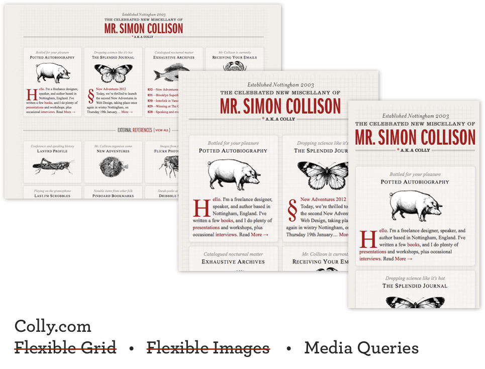

Responsive Design
Order of Business
-
Review final project wireframes and get your HTML into the group project
-
UX Audit
-
Responsive Design
-
Flexible Grids
-
Flexible Images
-
Media Queries
-
Exercises
-
WHAT your end users might want
-
WHY they want it
-
HOW to provide it to them
-
Usable?
-
Delightful?
-
What are questions you might have before buying a ticket to a conference?
-
Go through and buy a ticket.
Portfolio Inspiration
-
-
-
-
Show what I built in this class four years ago?
What is responsive web design?
Wikipedia says: Responsive web design (RWD) is a web design approach aimed at crafting sites to provide an optimal viewing experience—easy reading and navigation with a minimum of resizing, panning, and scrolling—across a wide range of devices (from mobile phones to desktop computer monitors)
Here is an example of one:
The Great Discontent

What are other options?
Fixed: set width, styles do not change depending on resize, no media queries
Fluid: built using percentages, no media queries
Adaptive: media queries to target specific devices (mobile, tablet, desktop)
Native app: can work without an internet connection, higher quailty UX
Separate mobile site: created only for small screens, lighter and faster
Why do RWD?
Write the code once and have it functional and legible across many devices.
People are using a wide range of devices to complete their tasks now. Reading on mobile phones, shopping on tablets, etc.
Let's take a look at some more responsive sites
What do they think about when implementing?
Play with the height and width of your browser to see what is happening
Did it make sense for the site to be built responsively?
Boston Globe
"The first major, high-traffic, content-heavy website to adopt a responsive design" -Beaconfire Wire
Helped "raise public awareness of this flexible, standards-based, multi-platform and user-focused web design approach" -Jeffrey Zeldman
Built by Buffalo
Let's try it out!
Responsive demo
Media Queries Syntax
@media (min-width: 680px) and (max-width: 1020px) {
h1 {
font-size: 2em;
Styles go here…
}
}
These are identical:
@media all and (min-width:500px) { … }
@media (min-width:500px) { … }
Media types: all, print, screen and
more
Media features: width, height, orientation and
more
Future Media features
Hover (if the device is able to hover), luminosity (dim or bright environment?) and
more
First exercise
If you want to match perfectly, the font is Montserrat and the teal is #8affbf.

How I would do it
Start mobile first
Move on to bigger widths slowly
How I would do it
Start mobile first
Move on to bigger widths slowly
Why mobile first?
Show more as we size up, not hide things when the screen gets more narrow. This is because mobile tends to have less bandwidth than devices with larger screen widths
Refactor!
Second exercise
Get started on this and we will finish it up next class.
Copy taken from Hipster Ipsum
Darker teal hex color: #7ce5a6

Reading
Shay Howe's Lessons
Responsive Design
What does that mean?
A flexible grid (with flexible images) that incorporates media queries to create a responsive, adaptive layout.
We should be:
-
Designing for features / capabilities
-
Not individual browsers
-
Designing to average screen size
-
Designing for changing content
But, it’s kinda hard.
Why it’s hard
-
More configurations to test
-
Need to handle different vertical sizes and relations.
-
Images and media need to resize.
-
Titles and Menus need multiple formats.
-
Buy-in from clients, designers, and developers
Why it’s awesome
-
Write once, display anywhere
-
Not designing for a static canvas, designing for responsiveness to content and the user.
-
Mobile support baked-in
-
True responsive design will display correctly on the iPad 23 in 2025.
-
Works regardless of device, orientation or resolution.
So What is Responsive Design?
Flexible Grid
Flexible Images
Media Queries
How?
-
More use of percentages
-
Less explicit positioning
-
Media queries
-
Fluid image widths
Are these Responsive Design?


Discussion on the differences between fixed, fluid, adaptive and responsive by Dan!
Bryan Rieger, “Rethinking the Mobile Web”
-
Mobile first
-
Use well structured, meaningful markup
-
the absence of support for @media queries is in fact the first @media query...
-
Adapt content (especially images) appropriately for each device
-
Compress content where possible and don’t include unnecessary data
Containers
Responsive Containers
Responsive Containers Max Width
Flexible Images
should be as easy as
img { max-width: 100%; }
Make this image flexible
Media Queries
Media Types
-
@media screen {...}
-
@media print {...}
ex.
@media (min-width: 600px) and (max-width: 1200px)
Enter Media Queries
-
Can be used inline in stylesheets (encouraged)
@media (max-width: 500px) { ... }
-
Can be used as separate stylesheets
<link rel="stylesheet" media="(max-width: 500px)" href="example.css" />
-
Can be used with @import (discouraged)
@import url(example.css) (max-width: 500px);
Making Media Queries Work
Make background-color purple when width is larger than 800px
How can we prevent crossing-out of styles?
Putting it all together
Responsive Containers Stack
How can we refactor this?
What about adjusting our text sizes?
Floating Elements
Other stuff we can do
-
Hide stuff with display: none
-
Make stuff appear with display: block
-
Create a separate print stylesheet with "@media print"
-
Adjust based on device orientation
-
Breakpoints
When does your design break? How can you adjust your page to respond?
Design vs device breakpoints
Exercise
#1: Make the image flexible
#2: Style the titles larger
#3: Add another break point at 400px
#4: Adjust the title and body font size for each breakpoint
#5: Hide the sidebar under 400px
#6: Show the content block #mobile-nav under 400px
Exercise
Homework
Reading
Coding / Design
-
Work on group project (due April 11)
-
Code Dobot so that it is responsive (due next class)
-
Code Dobot so that it is responsive (due next class)